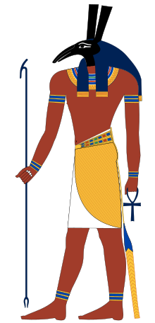
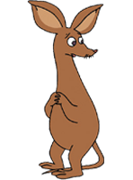

-

セト神
- エジプト神話における戦争の神。
セトはジャッカル（エジプトジャッカル＝オオカミ）の頭をした神であると思われているが、
壁画などで表現されているセトの頭はツチブタのものである。
-

スニフ
- 大きくて先のとがった耳と長いしっぽが特徴の、ムーミントロールの友だち。見た目はカンガルーに似ているが、スニフの名前の由来は、英語で「嗅ぐ」を意味する「sniff」から。よって、スニフはカンガルーではなく、より嗅覚の鋭いツチブタをモデルにした生き物なのではないか、と言う説もある。もっとも、原作者の「トーベ・ヤンセン」が亡くなっているので、真実は分からない。